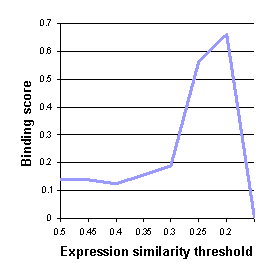

Expression similarity threshold
The rule-based modeling approach depends on selecting an appropriate threshold defining two similar expression profiles (similarity is measured as Euclidean distance normalized by the number of measurement points).
The figure bellow shows evaluation against the binding data by Lee et al. as a function of different expression similarity threshold for the cell cycle data set.

The range of threshold leading to good scores is relatively narrow. At values above 0.3 almost any two profiles would be deemed similar leading to many high coverage, imprecise rules. Correspondingly, values bellow 0.2 would give very few rules with low coverage. However, in a small range (0.3-0.2) there is a clear correlation where stricter similarity gives better scores. We selected 0.25 for the cell cycle data in this paper.